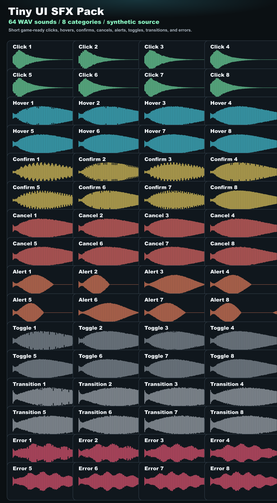

Tiny UI SFX Pack
Short synthetic sounds for game menus.
A compact set of click, hover, confirm, cancel, alert, toggle, transition, and error sounds for game jams, prototypes, and small releases.
0 WAV
0 categories
44.1 kHz
Click 1
Ready
Audition sounds
0 visible
Contact sheet
